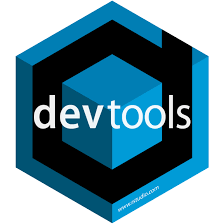

Schedule
Calendar
Starting the 29-08-2022, the encounters are scheduled for every Monday of the Fall.
⏲️ 12.00 to 2.00 p.m.
📍 Room 3021, Throckmorton PSC.
| 🗓️Date | | 🥕Topic | | 🙋🏻Members | | LINKS |
|---|---|---|---|
| 29-08-2022 | Intro, GitHub, Quarto | Adrian | https://github.com/adriancorrendo/Stats_Hub_2022 |
| 05-09-2022 | Labor Day | - | |
| 12-09-2022 | Hierarchical Bayesian Models I - Theory & Discussion | Adrian and Josefina | https://adriancorrendo.github.io/statasaurusweb/e2_bayes_1.html |
| 19-09-2022 | Hierarchical Bayesian Models II - Applied Examples with rjags, rstan |
Adrian and Josefina | https://adriancorrendo.github.io/statasaurusweb/e3_bayes_2.html |
| 26-09-2022 | Hierarchical Bayesian Models III | Adrian and Josefina | https://adriancorrendo.github.io/statasaurusweb/e4_bayes_3.html |
| 03-10-2022 | Shinyapps |
Adrian | https://adriancorrendo.github.io/statasaurusweb/e5_shinyapps.html |
| 10-10-2022 | Run APSIM in R, apsimx, lapply() style |
Ana | https://github.com/adriancorrendo/Stats_Hub_2022/tree/main/apsim |
| 17-10-2022 | Run APSIM in R II - Crop rotation, pmap() style |
Ana, Ignacio, Emma | https://github.com/adriancorrendo/apsiminR/ |
| 24-10-2022 | Systematic Reviews, Meta-analysis protocols |
Nicolas | https://adriancorrendo.github.io/statasaurusweb/e7_metaanalysis.html |
| 31-10-2022 | Advanced ggplot Data digitization packages (juicr) |
Adrian, Emma, Juan | |
| 07-11-2022 | ASA Meetings’ Week | - | |
| 14-11-2022 | Machine Learning, tidymodels |
Adrian, Luciana | |
| 21-11-2022 | Thanksgiving break | - | |
| 28-11-2022 | Open discussion session | - | |
| 05-12-2022 | Creating a package, devtools , roxygen2, GitHub Continuous Integration, CRAN | Adrian | |
| 12-12-2022 | Conclusions & next steps | - |